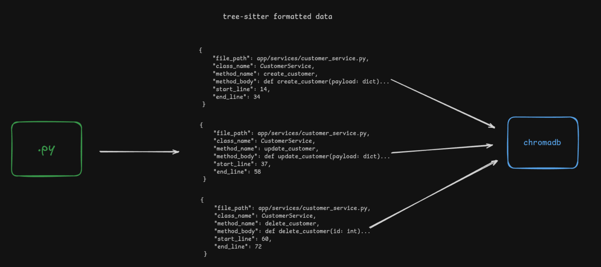

Construyendo un Servidor MCP: versión 0.1
Este post fué escrito en su totalidad por un humano.
No me considero la persona más entusiasmada por la IA. La primera vez que la usé fué en Diciembre de
2022 a través de Copilot. Mi primera
expericiencia fué
"escribiendo" tests en
unitest y tengo el
vívido recuerdo de mirar hacia el monitor y presenciar los primeros autocompletados dados por la
herramienta.
En ese entonces no existía nada de lo que existe hoy, ni siquiera el concepto de
prompt engineer.
Mucho menos el concepto que vengo a exponer hoy, casi 4 años despues de que la IA se vuelva parte de
mi vida y de la vida de prácticamente todos los desarrolladores.
Servidor MCP
Las siglas MCP significan Model Context Protocol y la palabra
servidor, bueno, no creo que deba explicarla. Un servidor MCP es un proceso que
se dedica a "servir" recursos a traves de un protocolo particular, similar a un servidor REST en
intención pero no en sintaxis. Mientras que un servidor tradicional REST expone
endpoints tales como GET /customer, un servidor MCP expone
3 tipos de objetos: Tools, Resources y Prompts.
Estos servidores tienen, a mi parecer, dos características principales:
- Utilizan JSON-RCP
para comunicarse con el cliente usando
stidioostremeable HTTPcomo capas de transporte - Son amigables con los LLM.
Mientras que el punto uno es algo meramente técnico, el segundo es el más interesante: ¿Qué significa "amigable con un LLM"? ¿Toman mates juntos? ¿Son del mismo equipo de fútbol?
Los LLM, al momento de ser entrenados, cuentan con el "conocimiento" (datos) que se le fué proporcionado a la fecha. Su "knowledge limit", generalmente de 3 a 6 meses previo a la fecha de su lanzamiento es todo lo que conocen. En los modelos iniciales, alla por 2022, ante cualquier pregunta de actualidad, la IA alucinaba y este es uno de los puntos principales de "amistad" entre los MCP y los LLM.
Cuando conectamos un LLM a un servidor MCP le damos al modelo el contexto necesario para que responda preguntas o accione ante un problema específico de nuestro entorno. Para ello, dotamos al LLM de manos (tools), libros (resources) e instrucciones (prompts) para que sea capaz de realizar actividades para las cuales no fué entrenado originalmente. De eso se trata el proyecto de hoy.
El problema
Como todos, en mi día a día laboral me encuentro con actividades que no son completamente de mi agrado. Actualmente me desempeño como Tech Lead y una de mis tareas implica generar issues en Jira para que el equipo las implemente. Para generar una issue tengo que tener en cuenta varios puntos. El contenido debe:
- Ser lo suficientemente técnico para que no haya (tanto) lugar a la duda o ambigüedad.
- Tener en cuenta la interconexión entre sistemas, las capas que lo componen y la interacción entre las mismas.
- Contener el suficiente contexto para que el programador no vaya a ciegas programando, sino que entienda la razón por la que realiza los métodos y el problema que está resolviendo.
- En raras ocasiones debe contener una sección no técnica para que otros roles aprueben o verifiquen que la funcionalidad es precisamente lo que se necesita.
En resumen, quiero automatizar (o semi automatizar) la generación de issues de buena calidad
haciendo
uso de IA. Esta actividad sería excelente para que me pueda enfocar en otras
cosas, agilizando el desarrollo (o terminando desempleado)
El contexto y sus formatos
El contexto de este problema abarca varios repositorios de código. Todos entre 40 y 50 mil LOC. En esta versión inicial estoy interesado en abarcar únicamente un repositorio.
Para que el LLM sea capaz de entender el repositorio existen varias alternativas para almacenar la información
- Almacenamiento semántico basado en vectores
- Almacenamiento de grafos
- Almacenamiento híbrido de grafos y vectores
- Almacenamiento en base a... nada. Simplemente guardar el texto
Por más que la última opción sea la más tentadora debido a la costumbre de simplemente generar prompts en herramientas como ChatGPT y Gemini, en realidad, es la alternativa menos eficiente. Los LLM tienen una ventana de contexto que es la cantidad de información medida en tokens que pueden procesar en una sola interacción.
Si proporcionamos 40 mil LOC, la cantidad de tokens generados superará la ventana de contexto de la mayoría de LLMs dandonos como resultado las alucinaciones que queremos evitar. Por esa razón, la alternativa que decidí utilizar en este proyecto es el almacenamiento semántico basado en vectores.
Semántica y tree-sitter
Primero... ¿qué es el almacenamiento semántico?
Básicamente es el almacenamiento de información en base al significado en vez
de únicamente al contenido. Vamos a un ejemplo
class QueryTool:
chroma_connection: ClientAPI = None
def __init__(self) -> None:
self.chroma_connection = ChromaSingleton()
def query(self, query_term: str) -> QueryResult:
"""Queries the chroma collection with a query term and returns the results"""
result = self.chroma_connection.get_or_create_collection("db").query(
query_texts=[query_term],
n_results=3,
include=["documents", "metadatas", "distances", "embeddings"],
)
l.info(f"Query results for query term '{query_term}': {result}")
return result
En el fragmento de código proporcinado vemos un montón de texto. Si alcenáramos la información tal cual
fué
presentada, un LLM tendría muchos tokens que procesar. Sería ideal entender qué representa cada segmento
del "texto". Observandolo nuevamente distinguimos una clase principal QueryTool,
dos métodos __init__ y query, y un atributo de clase
chroma_connection.
Estas distinciones implican el análisis semántico (muy simplificado) de una pieza de código.
Por suerte para realizar este tipo de análsis ya existen herramientas especializadas. Entre ellas una que destaca por su continuo uso en Github es tree-sitter, un parseador de código incremental con el objetivo de "entender" cualquier lenguaje de programación. Generalmente usado para hacer syntax highlighting, posee muchos usos. En nuestro caso, nos interesa que sea capaz de ditinguir métodos y clases en Python.
Tree-sitter es capaz de entender que def query(self, query_term: str) -> QueryResult: es
un método, en qué línea de código inicia, en cual termina, a qué clase pertenece, cuales son sus
argumentos,
qué documentación posee el método, etc, etc, etc. Es la herramienta ideal para dividir un gran
repositorio en chunks semánticos.
Vectorización
Recordando que estamos usando un Almacenamiento semántico basado en vectores ya tenemos mas o
menos entendida la parte semántica. Ahora falta entender la parte de vectores. No voy a ahondar
en
explicaciones matemáticas de vectores principalmente porque no estoy capacitado para hacerlo. Pero
tambien
porque hacen perder el foco del post. Definamos un vector como un listado de números:
[0.1, 0.52, -0.35, 0.93]. Cuando decimos que representamos datos como vectores lo que
sucede es que, a partir del uso de una herramienta como
chromadb,
tomamos
como input el texto y como output se nos da vectores, simple.
Luego, cuando queremos realizar una búsqueda tal como "connection to chroma", los términos tambien son transformados a vectores haciendo que la búsqueda sea algo como "qué tanto se parecen estos vectores a los vectores que tengo almacenados" y, de acuerdo a la similitud, un resultado se nos es proporcionado.
Chunks
Fusionando la separación semántica del código y luego convirtiendo los resultados en vectores nos da un excelente punto de partida para seccionar nuestra información en chunks. Los chunks son las piezas de un todo. En este proyecto almacené un registro vectorizado por cáda método de cada clase y un registro por cada definición de clase.
